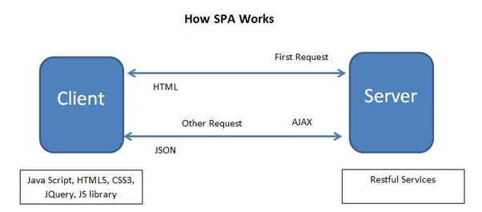

Welcome to my new Angular Single-page Application. This site is designed and implemented from scratch by following the best practice guideline of building a modern and mobile web application with the following features: high performance, user intuitive, scalability and maintainable.
S ingle-page application (SPA) is a web application or web site that interacts with the user by dynamically rewriting the current page rather than loading entire new pages from a server. This approach avoids interruption of the user experience between successive pages, making the application behave more like a desktop application. In a SPA, either all necessary code – HTML, JavaScript, and CSS – is retrieved with a single page load, or the appropriate resources are dynamically loaded and added to the page as necessary, usually in response to user actions. The page does not reload at any point in the process, nor does control transfer to another page, although the location hash or the HTML5 History API can be used to provide the perception and navigability of separate logical pages in the application. Interaction with the single page application often involves dynamic communication with the web server behind the scenes.

R esponsive Web Design (mobile friendly): An approach to web design aimed at crafting sites to provide an optimal viewing and interaction experience—easy reading and navigation with a minimum of resizing, panning, and scrolling—across a wide range of devices (from desktop computer monitors to mobile phones). Responsive web design is becoming more important as the amount of mobile traffic now accounts for more than half of total Internet traffic.
C ross-Browser Compatibility (browser agnostic): A website is compatible with multiple major Web browsers, such as Chrome, Internet Explorer, Safari, and Firefox. This means a website must ensure that their design works properly and that its appearance is error-free and functional on any platform used to view it, which includes Windows, Macintosh, IOS, and Android.